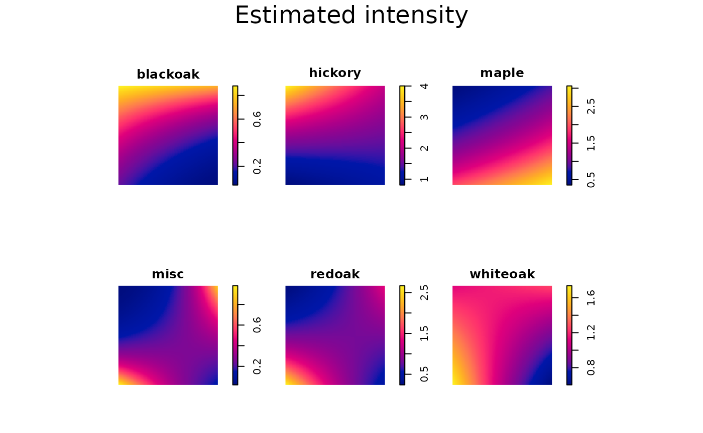
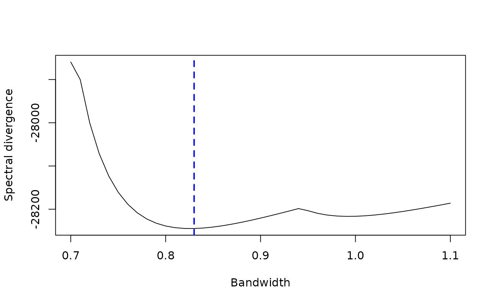
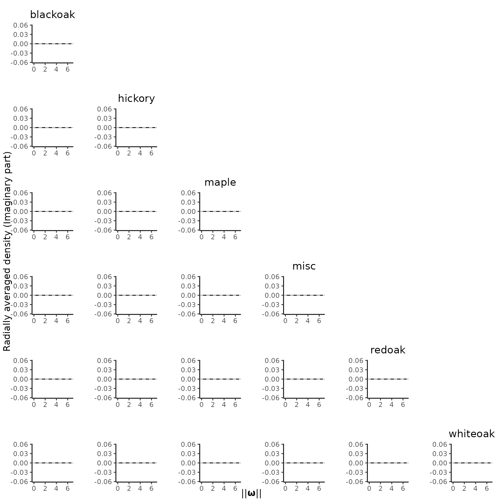
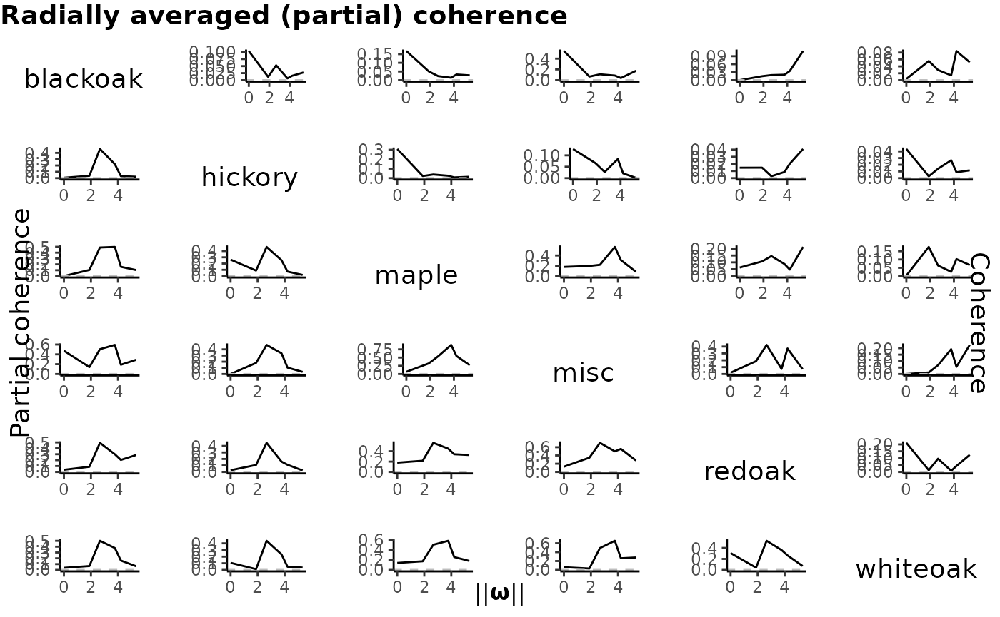

In this tutorial, we use the Lansing Woods dataset to demonstrate how to extract frequency domain features from a multivariate inhomogeneous point pattern data by SpecPP.
Import package and data
The Lansing Woods dataset can be imported from the
spatstat package, which consists of the spatial
distributions of six different types of trees.
library(SpecPP)
library(spatstat)
plot(split(lansing), pch = 20, cex = .1, main = "Point pattern of Lansing Woods")
summary(lansing)
#> Marked planar point pattern: 2251 points
#> Average intensity 2251 points per square unit (one unit = 924 feet)
#>
#> *Pattern contains duplicated points*
#>
#> Coordinates are given to 3 decimal places
#> i.e. rounded to the nearest multiple of 0.001 units (one unit = 924 feet)
#>
#> Multitype:
#> frequency proportion intensity
#> blackoak 135 0.05997335 135
#> hickory 703 0.31230560 703
#> maple 514 0.22834300 514
#> misc 105 0.04664594 105
#> redoak 346 0.15370950 346
#> whiteoak 448 0.19902270 448
#>
#> Window: rectangle = [0, 1] x [0, 1] units
#> Window area = 1 square unit
#> Unit of length: 924 feetAfter importing the data, first we should check the side lengths of the observational window. If their values are too small, the spectral estimator would be evaluated at a coarse frequency grid, which can not capture the frequency domain characteristics of the point pattern thoroughly. On the other hand, if they are too large, it would make the computation unfeasible. We suggest that side lengths between 20 and 40 strike a good balance between computational burden and high level of granularity.
As we see in summary(lansing), the window is the unit
square (because spatstat
rescaled the original window), which is too small for spectral analysis.
Thus, we rescale it by a factor of 1/20:
scale.factor = 1/20
spp = rescale(lansing, scale.factor)Now the rescaled dataset spp with side lengths 20 is
enough for our analysis.
Window(spp)
#> window: rectangle = [0, 20] x [0, 20] units (one unit = 46.2 feet)Estimate pseudo-spectrum
We use the kernel spectral density estimator (KSDE) to estimate the
pseudo-spectrum of spp. The calculation of KSDE involves
two critical intermediate steps: intensity function estimation and
bandwidth selection.
Intensity function estimation
The KSDE involves the first-order intensity function, which needs to
be estimated. Although it can be estimated nonparametrically
(spatstat::density.ppp() does that!), the nice asymptotic
properties of our KSDE are established under the parametric form of the
intensity functions. Hence, for each tree species, we fit a log-liner
model based on the Cartesian coordinates:
spps = split(spp)
fit.lambda = vector("list", length(spps))
names(fit.lambda) = names(spps)
for (i in seq_along(spps)){
fit.lambda[[i]] = predict.ppm(ppm(spps[[i]] ~ x + y + x:y))
}Then, plot the fitted intensity to make sure it captures the spatial
inhomogeneity of the data well. Below figure suggests that our model
~ x + y + x:y might be too simple, but for pedagogical
purpose, we’ll give it a pass here.

In practice, we may include other spatial covariates into the model
to better depict the inhomogeneity. To do that, specify the names of
covariates in the model syntax, and assign the object storing covariates
to the data argument of spatstat.model::ppm().
For example, if you have two covariates pH and
gradient, you need to combine them into a list and pass it
to the data argument (check
?spatstat.model::ppm for more details about the format of
the covariates):
# Just an example. This dataset from spatstat doesn't have any covariate.
covars = list(pH, gradient)
for (i in seq_along(spps)){
fit.lambda[[i]] = predict.ppm(ppm(spps[[i]] ~ x + y + x:y + pH + gradient,
data = covars))
}Bandwidth selection
To ensure better estimation performance, we need to select a good
bandwidth for the KSDE, which is done by select_band(). The
required arguments for select_band() are:
-
ppp: The point pattern -
inten.formula: The model for the intensity (mentioned in previous section), in our example, is"~ x + y + x:y". Note that here you need to enclose the syntax in quotation marks to make sure it is a string. -
band.range: A numeric vector indicating the search space for the optimal bandwidth.
Another argument data.covariate, which is used to store
the covariate data, is also required if you specify any spatial
covariate other than Cartesian coordinates in
inten.formula. All the other arguments of
select_band() can be safely ignored.
cv = select_band(ppp = spp,
inten.formula = "~ x + y + x:y",
band.range = seq(0.7, 1.1, .01))
plot(x = cv$Result[1,], y = cv$Result[2,], type = "l",
xlab = "Bandwidth", ylab = "Spectral divergence")
abline(v = cv$OptimalBandwidth, col = "blue", lwd = 2, lty = "dashed")
As you see in above figure, the select_band() calculate
the spectral divergence for all bandwidth specified in
band.range. The bandwidth minimizing the spectral
divergence is the optimal bandwidth we select, which is
cv$OptimalBandwidth = 0.83 (marked by the blue dashed
line).
Important
There are two caveats for bandwidth selection.
- The resolution of the bandwidth search space
band.rangeshould not be either too fine or too coarse. It is a trade-off between the computational time and accuracy of your result. - The length of your search space should not be too narrow;
otherwise then there is a high chance that it can not cover the “global”
minimum. Sometimes the “minimum” happens at the boundary of your search
space, where
select_band()would give you a warning message to tell you to try a longer search range. Sometimes warning message does not pop out but you still might be wrong, because you find a local minimum which does not lie on the boundary, such as specifyingband.range = seq(0.96, 1.05, .01)in this example.
Due to above reasons, in practice, you may run
select_band() and plot the result multiple times to check
whether you have specified a good bandwidth search space.
Calculate the KSDE
Finally, we can calculate the KSDE with the fitted intensity and cross-validated bandwidth.
KSDE = periodogram_smooth(ppp = spp,
inten.formula = "~ x + y + x:y",
bandwidth = cv$OptimalBandwidth)The output of periodogram_smooth() is a list of 6
(marginal) + 15 (cross) = 21 KSDE matrices.
names(KSDE)
#> [1] "blackoak, blackoak" "blackoak, hickory" "blackoak, maple"
#> [4] "blackoak, misc" "blackoak, redoak" "blackoak, whiteoak"
#> [7] "hickory, hickory" "hickory, maple" "hickory, misc"
#> [10] "hickory, redoak" "hickory, whiteoak" "maple, maple"
#> [13] "maple, misc" "maple, redoak" "maple, whiteoak"
#> [16] "misc, misc" "misc, redoak" "misc, whiteoak"
#> [19] "redoak, redoak" "redoak, whiteoak" "whiteoak, whiteoak"Note that the KSDE for cross pseudo-spectrum is complex-valued. To
visualize the result, we need to plot the real and imaginary parts
separately. By default, plot_pairs() plot the real part of
the radially averaged spectral estimate as follows.
plot_pairs(est.list = KSDE, ppp = spp)
We can also use type = "Im" to check the imaginary part.
As below figure shows, the values are almost zero (for marginal cases
they should be exactly zero) so we can focus on the real part.
plot_pairs(est.list = KSDE, ppp = spp, type = "Im")
Coherence analysis
coh.partial = coherence(sp.est = KSDE, ppp = spp)
#> Number of frequencies to pick the maximum partial coherence: 25 (this value should not be too small).
coh = coherence(sp.est = KSDE, ppp = spp, type = "normal")
#> Number of frequencies to pick the maximum coherence: 25 (this value should not be too small).
plot_coher(KSDE, coh, coh.partial)